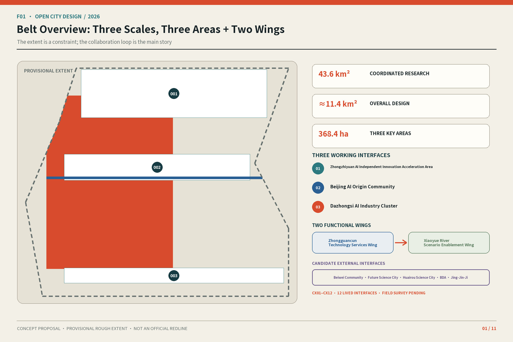
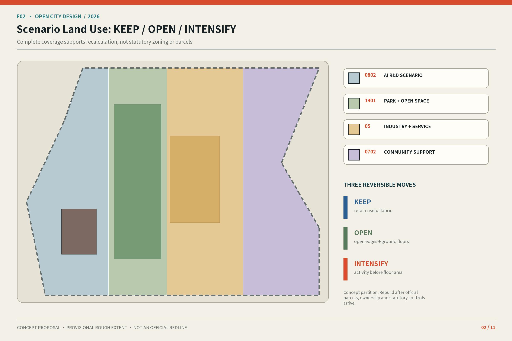
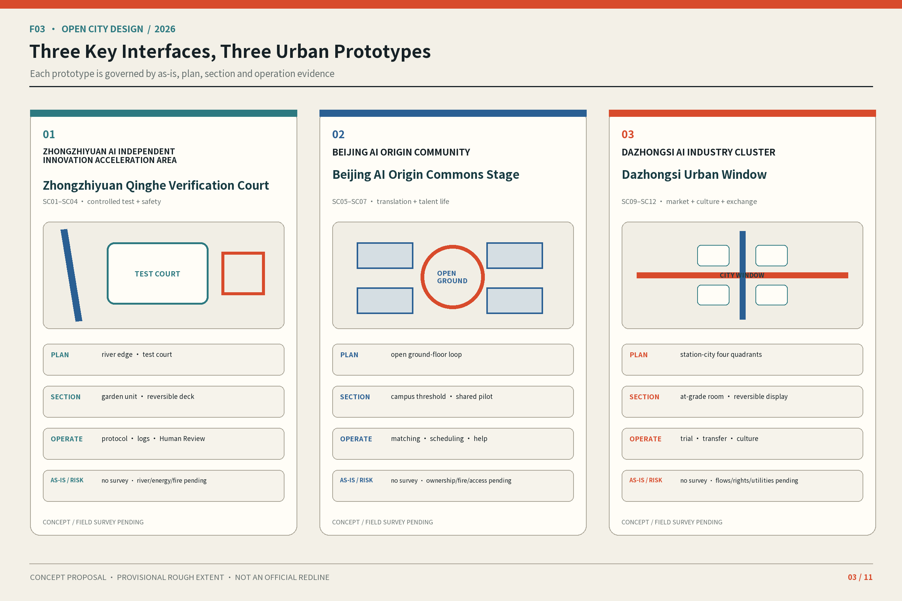
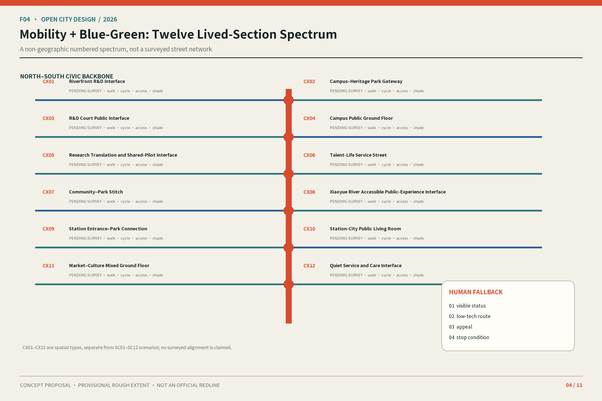
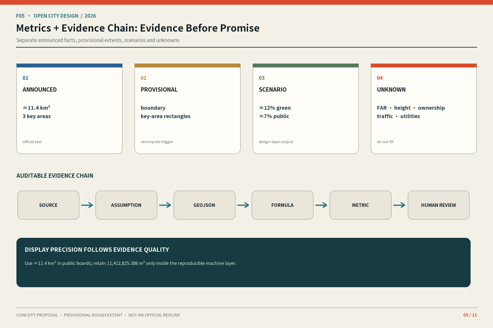
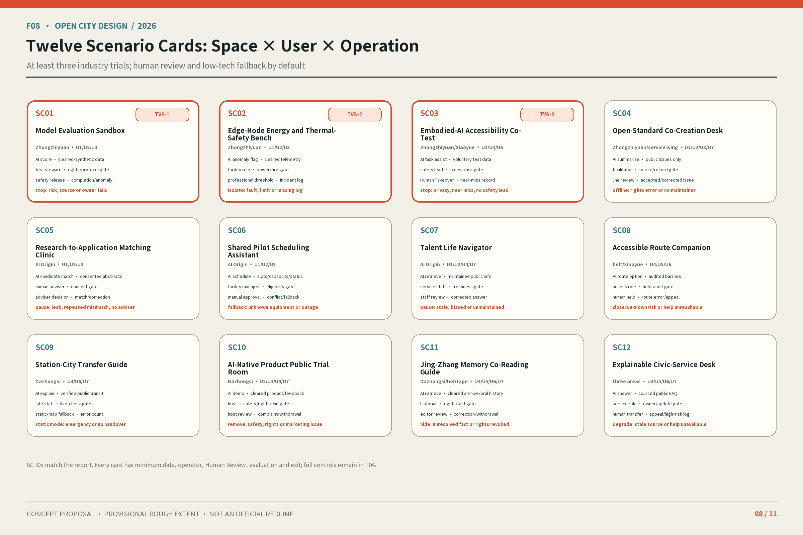
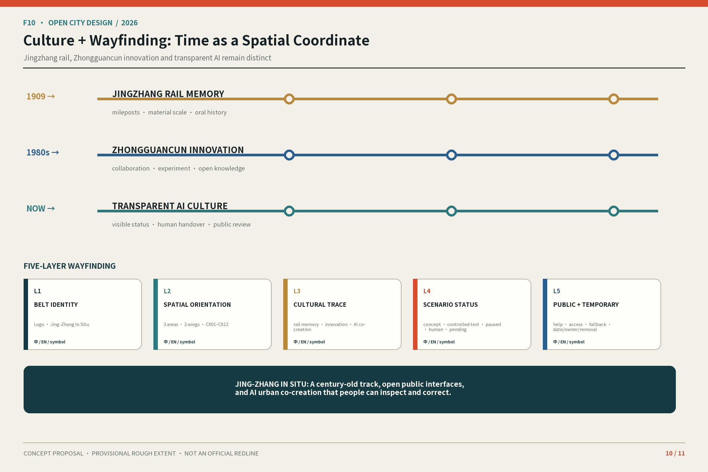
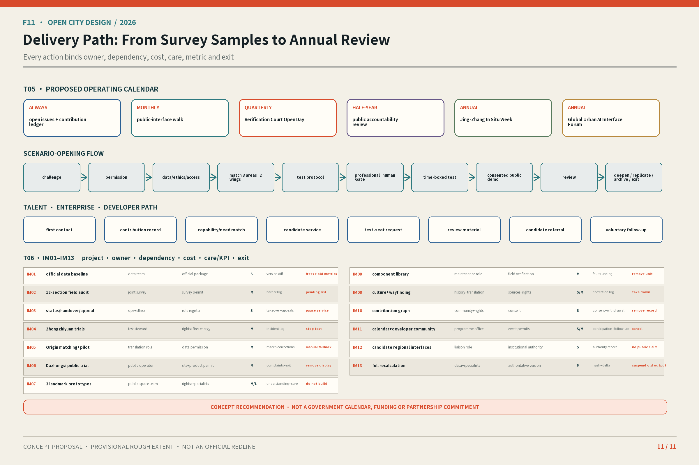

Eleven distinct boards form the human-reading layer. Every map is drawn from the submitted GeoJSON; provisional extents stay dashed and subordinate, while scenario layers never masquerade as surveyed or statutory plans.
Task coverage and self-check status
This page explicitly covers the overview map, three scope levels, key areas, land-use structure, mobility, blue-green public space, buildings, renewal projects, AI scenarios, core metrics, sources, and assumptions. Every claim returns to structured evidence and a stop condition.

F01 · Belt Overview: Three Scales, Three Areas + Two WingsThe extent is a constraint; the collaboration loop is the main story

F02 · Scenario Land Use: KEEP / OPEN / INTENSIFYComplete coverage supports recalculation, not statutory zoning or parcels

F03 · Three Key Interfaces, Three Urban PrototypesEach prototype is governed by as-is, plan, section and operation evidence

F04 · Mobility + Blue-Green: Twelve Lived-Section SpectrumA non-geographic numbered spectrum, not a surveyed street network

F05 · Metrics + Evidence Chain: Evidence Before PromiseSeparate announced facts, provisional extents, scenarios and unknownsF06 · Identity System: One Belt, Three Interfaces, One GrammarA shared language—not an official government or place identityF07 · AI Innovation Ecosystem: Three Areas + Two WingsSpace, talent, compute, data, scenarios and governance form an auditable loop

F08 · Twelve Scenario Cards: Space × User × OperationAt least three industry trials; human review and low-tech fallback by defaultF09 · Three Landmarks + Open Contribution Ledger + ComponentsContributions are reviewable, correctable and withdrawable; concept components remain reversible

F10 · Culture + Wayfinding: Time as a Spatial CoordinateJingzhang rail, Zhongguancun innovation and transparent AI remain distinct

F11 · Delivery Path: From Survey Samples to Annual ReviewEvery action binds owner, dependency, cost, care, metric and exit
Evidence + limitations
Extent status
SITE and KEY_AREA are provisional_rough. Recalculate layers, metrics, boards and PDFs when official polygons arrive.